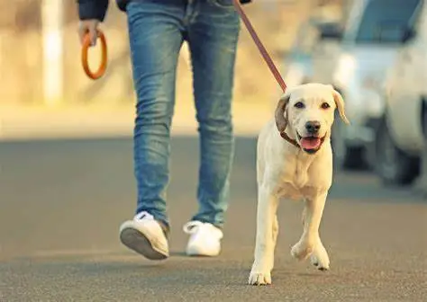
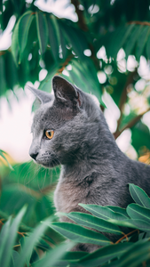
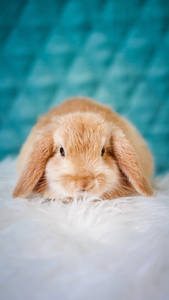

Je m’appelle Céline,
J’ai travaillé dans différents domaines tels que le commerce, l’industrie, la restauration, la satisfaction clientèles tous ces métiers mon permis de voir que la relation avec les clients était facile pour moi.Mais il me manquait cette étoile dans les yeux et l'envie de me sentir moi même et fier de mon travail.
Ayant eu un soucis de santé, j’ai cessé de travailler et j’ai adopté mon petit Tayson, aussi appelé
Titi.
Un petit bouledogue français qui m’a ouvert les yeux sur la profession que je souhaitais exercer.
J’ai dû m’absenter quelques jours et là une question importante me vient à l’esprit :
« Ou vais-je laisser mon Titi ? Chez qui ? Avec qui ? Sera-t-il bien traité ?....... ».
J’ai découvert beaucoup de site sur internet des chaines mais cela ne me convenait pas et là, je me suis dit : « A mon retour, je serai Pet Sitter » Mais pas une Pet Sitter je serai ....
LA NOUNOU DES BOULES DE POILS
SERVICES
C'est quoi une nounou de boule de poils
Des promenades, des jeux, des photos, des gardes à domicile, des soins, des visites professionnelles et chaleureuses pour vos boules de poils
Promenade de 30mn 1h une fois ou plusieurs fois par jours dans les lieux preferés de vos animaux
Garde à mon domicile pour vos boules de poils, la demi-journée, la journée, le week-end, la semaine etc....
Les avantages
Une présence dans votre maison pendant votre absence (possibilité d'ouvrir, fermer vos volets, arroser vos plantes, relever le courrier...)
Répondre au besoin de votre animal,le dépenser et le stimuler lui faire oublier votre absence.
Chiens
Les Tarifs
1 à 2 chiens
-
1 fois par jour
- 30 minutes 15 euros
- 45 minutes 20 euros
- journée entière 30 euros
- nuitée à mon domicile 35 euros
-
2 fois par jours
- 30 minutes 27 euros
- 45 minutes 37 euros
-
Frais supplémentaires
- Dimanches et jours fériés +3€
- Animal supplémentaire+3€
- Frais kilométrique au delà de 8km : 40cts le km
- Réduction si vous avez d'autres animaux
- Réduction si garde ponctuelle
Chats
Les Tarifs
1 à 2 chats
-
1 fois par jour
- 30 minutes 13 euros
- 45 minutes 17 euros
-
2 fois par jours
- 30 minutes 20 euros
- 45 minutes 33 euros
-
Frais supplémentaires
- Dimanches et jours fériés +3€
- Animal supplémentaire+3€
- Frais kilométrique au delà de 8km : 40cts le km
- Réduction si vous avez d'autres animaux
- Réduction si garde ponctuelle
Nacs
Les Tarifs
1 à 2 nacs
-
1 fois par jour
- 30 minutes 10 euros
- 45 minutes 15 euros
-
2 fois par jours
- 30 minutes 20 euros
- 45 minutes 30 euros
- Garde a mon domicile 10 euros/jours
-
Frais supplémentaires
- Dimanches et jours fériés +3€
- Animal supplémentaire+3€
- Frais kilométrique au delà de 8km : 40cts le km
- Réduction si vous avez d'autres animaux
- Réduction si garde ponctuelle